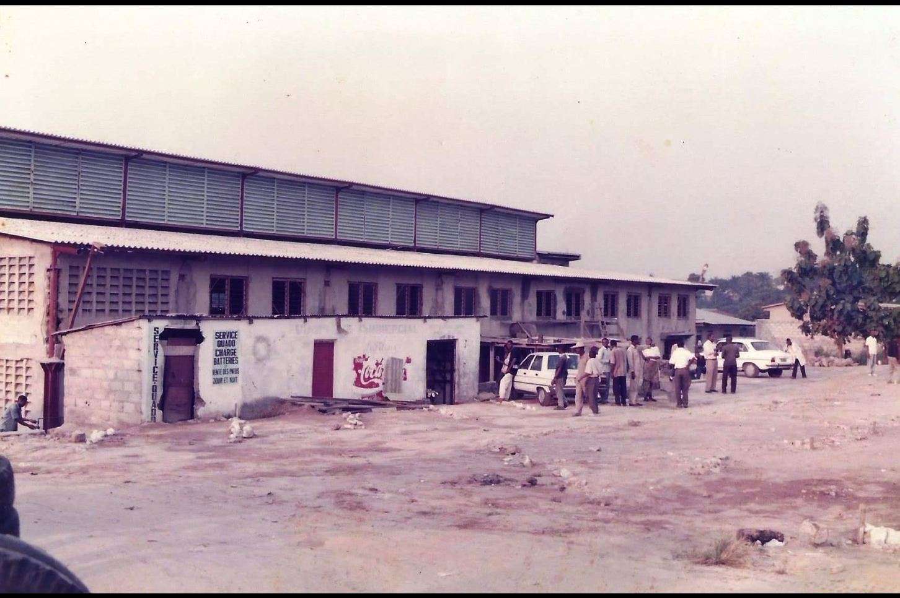
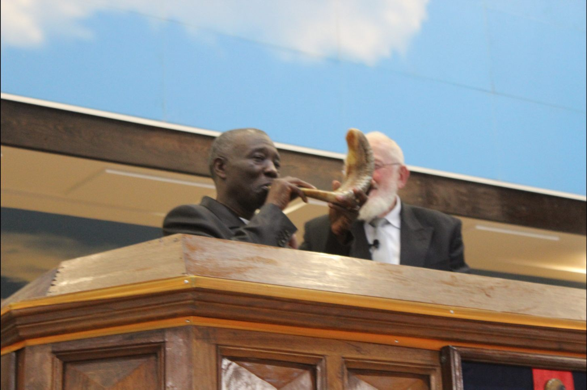

Bienvenue dans
L'Histoire de Shekinah Tabernacle
"Car là où deux ou trois sont assemblés en mon nom, je suis au milieu d'eux." - Matthieu 18:20
Fondé en 1995 avec 12 membres fondateurs

Notre Héritage
Une Histoire de Foi
"Souvenez-vous des jours d'autrefois..." - Deutéronome 32:7
De 2000 à 2010 : Construction et expansion de notre lieu de culte

Notre Patrimoine
Témoignages & Souvenirs
"Racontez à vos enfants les merveilles de l'Éternel..." - Psaume 78:4
25 ans de ministère et de croissance spirituelle